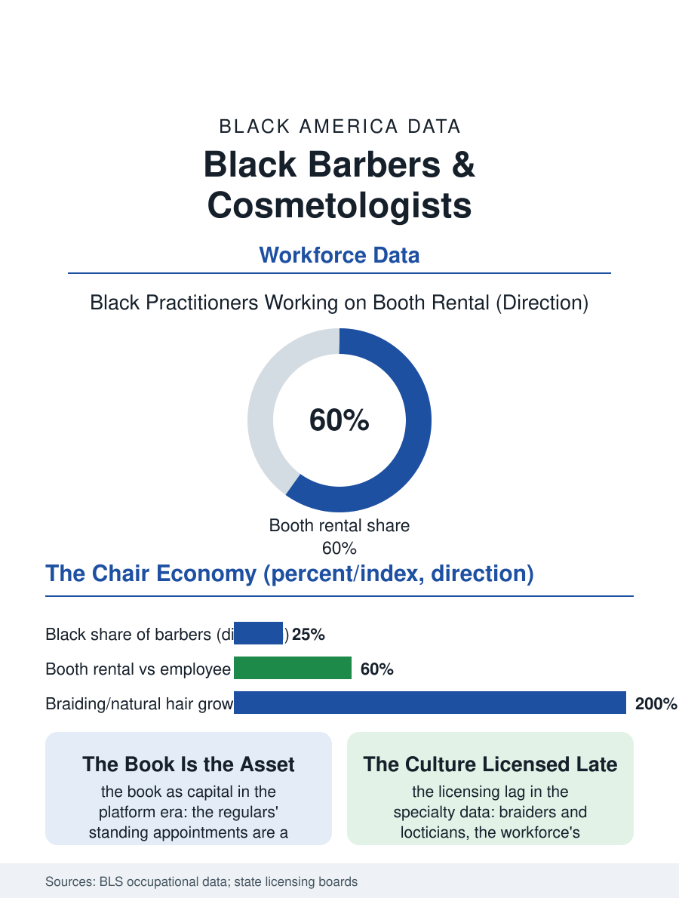

Black Employment
The Chair: Black Barbers and Cosmetologists at Work
A hundred thousand licensees, booth renters and book builders, in the trades that cannot be offshored and whose chairs anchor the service economy. The chair file.

Barbering and cosmetology are the Black service economy's twin pillars, employing on the order of a hundred thousand Black licensees whose shops are simultaneously businesses, covered in the business file, and workplaces, the subject here: chairs rented, commissions split, apprenticeships served, in the trades where Black practitioners are not a minority of the workforce but its defining presence in the community's market. This article reads the barbering workforce file.
The License and the Chair
The workforce's structure runs on the chair's economics in two standard forms: the employee model of the franchise and chain salons, wages plus tips under the house's rules, and the booth rental model of the independent shop, the practitioner paying the house a weekly rent and keeping the book's proceeds, a structure that makes most established barbers and stylists micro-entrepreneurs within another's roof, with the tax and benefit consequences, the self-employment file's full ledger, attached. Licensing is the trade's gate and its politics: the state boards' hour requirements, the barber's thousand-plus hours and the cosmetologist's similar load, the examination's theory and practical components, and the reciprocity patchwork that strands the relocating practitioner's license at the state line, are the workforce policy file's standing items, with the reform movement's push to cut hours and recognize experience running against the boards' defense of the standard, a debate in which the Black licensee organizations hold positions on both sides, the established shops valuing the gate that limits their competition and the entrants pricing it as the toll it is. The apprenticeship tradition predates the schools: the master barber's informal training built the trade for a century before the licensing era, and the schools, including the historic Black barber colleges of the owned-college file's tradition, remain the pipeline's formal channel, their graduation and placement rates the workforce's intake measure.
The Book, the Chair, and the Clock
The work's economics are the appointment book's: the established practitioner's income is the book's density, the regulars' standing appointments composing a revenue base as stable as any in the service economy, built over years and portable, in the modern era, to the booking platform whose app now holds the book the shop's counter book once did, repricing the practitioner's independence as the platform's commission. The trade's occupational health file is specific: the standing hours' toll on the back and the feet, the chemical exposures of the salon's relaxers and colors, historically borne by a workforce whose product training the manufacturers supplied, and the repetitive strain of the clipper hand, an injury profile the compensation data undercount because the booth renter has no employer to claim against. The gender file divides the trades' cultures as the community knows them, the barbershop and the salon as gendered institutions with their own economies, the salon's ticket the larger and its services the more chemical, the barbershop's cadence the faster, both converging in the unisex and natural hair economy of the current era, where the loctician and the braider, licensed under the new specialty categories the states have created under the practitioners' own lobbying, represent the workforce's fastest-growing Black segment and its clearest case of the licensing system following the culture's practice a generation late.
The Institution's Workforce
The workforce file closes on the practitioner's civic position, which the business file's version of the shop implies but the employment lens specifies: the barber and the stylist are the community's licensed confidants, their chairs the confessional of the service economy, their incomes the reliable middle of the neighborhood's wage distribution, and their shops the training ground not only of the next practitioners but of the clientele's own presentation, the interview cut and the graduation style being workforce services the employment data never line-item. The trade's forward file is the platform's: the booking apps and the mobile barbering services reintermediating the chair as the stream reintermediated the DJ's crates, with the established book's portability the practitioner's new capital question. The bureau counts the licensees in the industry's tables, Black practitioners overrepresented against the population by the community market's own demand. The file's last word is the chair's: the trades persist because the service cannot be offshored, automated, or deferred, the head requires the hand, and the hand, in a hundred thousand Black careers, has made the requirement into a livelihood, a business, and an institution, all three in one chair.
More in Black Employment
The Black Unemployment Rate: The Two-to-One Pattern
Black unemployment runs at roughly twice the White rate — 5.5 percent against 3.3 percent in annual averages — a ratio stable across five decades of federal data. How it is measured and why it persists.
Black Median Weekly Earnings: The 80-Cent Ratio
Black full-time workers earn a median of about $900 a week — roughly 80 cents for every dollar White workers earn. The BLS earnings data by group, gender, and occupation.
Black Labor Force Participation: Working at National Rates
Black labor force participation runs at roughly the national rate — and Black women participate at higher rates than White women. The BLS participation data.
Source: Bureau of Labor Statistics occupational employment data; state board of barbering and cosmetology licensing records.